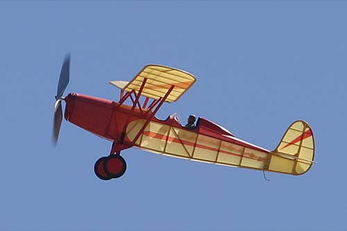

This gorgeous model was built from a Sig kit by Kermit Walker. Open cockpit models like this demand some sort of pilot figure. Well done, Kermit.

return
Copyright 2003, Thayer Syme. All rights reserved